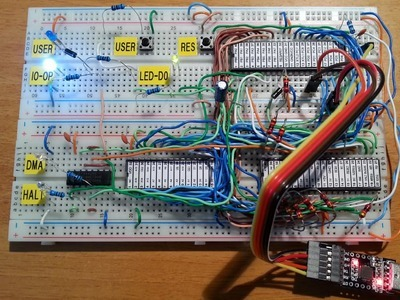
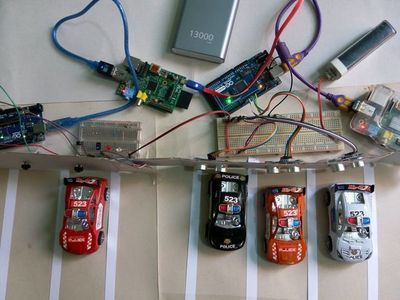

2016-12-22 - Nº 86

Editorial
Esta é a Newsletter Nº 86 que se apresenta com o mesmo formato que as anteriores. Se gostar da Newsletter partilhe-a!
Todas as Newsletters encontram-se indexadas no link.
Esta Newsletter tem os seguintes tópicos:
Faz hoje anos que nascia em 1799 Nicholas Callan. Este irlandês é responsável pela invenção da bobine de indução. Foi uma daquelas circunstâncias em que a necessidade faz o engenho. Callan precisava de gerar um nível de electricidade mais elevado do que o existente e em 1834 começou a trabalhar nesta ideia que concluiria em 1836 dando origem à primeira bobine de indução. Também faz anos que nasceu Srinivasa Ramanujan. Este matemático indiano nasceu em 1887 e apesar não ter muita prática com a matemática pura deu contributos bastante significativos nas áreas da analise matemática, teoria de números, séries infinitas e fracções sucessivas. A ele são atribuídas a conjectura de Ramanujan, o primo de Ramanujan, entre outros. Ficou conhecido pelo que disse a GH Hardy quando este fez uma afirmação de que o numero 1729 era chato. E Ramanujan contrapôs indicando que era exactamente o contrário e esse numero possuía propriedades extraordinárias como ser o menor numero expressável pela soma de dois cubos com números inteiros diferentes ( 1729 = 1^3 + 12^3 = 9^3 + 10^3 ). Devido a este episódio e em homenagem a este matemático, cuja carreira foi curta mas brilhante, uma série de desenhos animados - Futurama apresenta o numero 1729 dissimulado em diversos locais.
Nesta semana ficámos a saber que a DPDgroup subsidiaria da La Poste, após dois anos de testes conseguiu obter uma licença para entregar, com o recurso a drones, encomendas num raio de 15 KMs, em França. A Raspberry Pi Foundation disponibilizou a sua conhecida distribuição Raspbian/PIXEL para o ambiente x86. Isto irá permitir que quem não tenha um Raspberry PI mas ainda assim queira testar como é o seu interface o possa fazer num qualquer PC. Mark Zuckerberg, o criador do Facebook, apresentou esta semana o projecto pessoal que abraçou durante este ano, que baptizou de "Jarvis". Este projeto, que visa usar inteligência artificial para controlo de uma habitação, permitiu avaliar o estado atual da inteligência artificial para uma utilização deste tipo.
Na Newsletter desta semana apresentamos diversos projetos de maker assim como alguns modelos 3D que poderão ser úteis. Saiu a MagPI Nº 53 de Janeiro de 2017.
Estando na época natalícia resta-me desejar a todos em meu nome e em nome do altLab votos de um excelente Natal com muitas prendas no sapatinho.
 João Alves ([email protected])
João Alves ([email protected])
O conteúdo da Newsletter encontra-se sob a licença  Creative Commons Attribution-NonCommercial-ShareAlike 4.0 International License.
Creative Commons Attribution-NonCommercial-ShareAlike 4.0 International License.
Novidades da Semana ^
DPDgroup drone delivers parcels using regular commercial line
"Following two years of tests, crowned with success, DPDgroup, GeoPost's international parcel delivery network and international express subsidiary of Le Groupe La Poste, received authorisation from the General Directorate for Civil Aviation to deliver parcels using drones on a regular 15km route. For the first time worldwide, a regular commercial route makes it possible to deliver parcels by drone. Once a week, the DPDgroup drone travels between Saint-Maximin-La-Sainte-Beaume and Pourrières, in south of France (Provence region). The route makes it possible to delivery items to a cut-off incubator of companies including a dozen start-ups specialized in technology. Their parcels now delivered by Chronopost and DPD France will be sent by drone from the Pick-up point in Saint-Maximin. This represent a new way of addressing the issue of last-mile deliveries, especially when it comes to areas that are difficult to access. For both the departure and arrival of the drone, a delivery terminal is used to secure the parcel loading phases, from take-off to landing and placement of the parcel." [...]

PIXEL for PC and MAC
"Our vision in establishing the Raspberry Pi Foundation was that everyone should be able to afford their own programmable general-purpose computer. The intention has always been that the Raspberry Pi should be a full-featured desktop computer at a $35 price point. In support of this, and in parallel with our hardware development efforts, we’ve made substantial investments in our software stack. These culminated in the launch of PIXEL in September 2016. PIXEL represents our best guess as to what the majority of users are looking for in a desktop environment: a clean, modern user interface; a curated suite of productivity software and programming tools, both free and proprietary; and the Chromium web browser with useful plugins, including Adobe Flash, preinstalled. And all of this is built on top of Debian, providing instant access to thousands of free applications. Put simply, it’s the GNU/Linux we would want to use. Back in the summer, we asked ourselves one simple question: if we like PIXEL so much, why ask people to buy Raspberry Pi hardware in order to run it? There is a massive installed base of PC and Mac hardware out there, which can run x86 Debian just fine. Could we do something for the owners of those machines?" [...]
Building Jarvis
"My personal challenge for 2016 was to build a simple AI to run my home -- like Jarvis in Iron Man. My goal was to learn about the state of artificial intelligence -- where we're further along than people realize and where we're still a long ways off. These challenges always lead me to learn more than I expected, and this one also gave me a better sense of all the internal technology Facebook engineers get to use, as well as a thorough overview of home automation. So far this year, I've built a simple AI that I can talk to on my phone and computer, that can control my home, including lights, temperature, appliances, music and security, that learns my tastes and patterns, that can learn new words and concepts, and that can even entertain Max. It uses several artificial intelligence techniques, including natural language processing, speech recognition, face recognition, and reinforcement learning, written in Python, PHP and Objective C. In this note, I'll explain what I built and what I learned along the way." [...]
Outras Notícias
- Drones dazzle at Disney World in a new holiday show
- Google Lunar XPRIZE Team HAKUTO Announces Rideshare Agreement with TeamIndus for a 2017 Lunar Mission
- SK Hynix Inc. to Construct a Cutting Edge NAND Flash FAB in Cheongju
- First Ever Cargo Drone Deliveries in Amazon Rainforest
- NASA Engineers Test Combustion Chamber to Advance 3-D Printed Rocket Engine Design
Ciência e Tecnologia ^

The world's tiniest radio
"Researchers from the Harvard John A. Paulson School of Engineering and Applied Sciences (SEAS) have made the world's smallest radio receiver, built out of an assembly of atomic-scale defects in pink diamonds. This tiny radio, whose building blocks are the size of two atoms, can withstand extremely harsh environments and is biocompatible, meaning it could work in places as varied as a probe on Venus to a pacemaker in a human heart. The research was led by Marko Loncar, the Tiantsai Lin Professor of Electrical Engineering at SEAS, and graduate student Linbo Shao, and was published in the journal Physical Review Applied. The radio uses tiny imperfections in diamonds called nitrogen-vacancy (NV) centers. To make NV centers, researchers replace one carbon atom in a tiny diamond crystal with a nitrogen atom and remove a neighboring atom creating a system that is essentially a nitrogen atom with a hole next to it. NV centers can be used to emit single photons or detect very weak magnetic fields. They have photoluminescent properties, meaning they can convert information into light, making them powerful and promising systems for quantum computing, phontonics, and sensing." [...]
Mimicking biological movements with soft robots
"Designing a soft robot to move organically to bend like a finger or twist like a wrist has always been a process of trial and error. Now, researchers from the Harvard John A. Paulson School of Engineering and Applied Sciences and the Wyss Institute for Biologically Inspired Engineering have developed a method to automatically design soft actuators based on the desired movement. The research is published in The Proceedings of the National Academy of Sciences." [...]
Human Cells Eat Nanowires
"Drop silicon nanowires and human cells into the same petri dish, and you'll see something extraordinary: The cells will eat the nanowires. Researchers at the University of Chicago recorded the phenomenon, and reported it Friday in the journal Science Advances. The group aims to harness that knowledge to develop a new means of drug delivery or bioelectronic therapy. 'We want to do something that is special,' says Bozhi Tian, a materials scientist at the University of Chicago. "We're trying to develop a bioelectronic device that is intracellular" and can control individual parts of the cell, he says." [...]
Astronauts to get help from snake robots
"Norwegian researchers are looking into how a snake robot might carry out maintenance work on the International Space Station (ISS), study comets, and explore the possibility of living and working in lava tunnels on the Moon. Three years ago SINTEF was investigating whether snake robots could help astronauts working on Mars with mobility and access. As part of a project commissioned by the ESA, researchers are to continue with this work and are carrying out a preliminary study to examine the technology and other opportunities for utilising robots in space." [...]
aeroMorph
"The project investigates how to make origami structure with inflatables with various materials. We introduce a universal bending mechanism that creates programmable shape-changing behaviors with paper, plastics and fabrics. We developed a software tool that generates this bending mechanism for a given geometry, simulates its transformation, and exports the compound geometry as digital fabrication files. A custom heat-sealing head that can be mounted on usual 3-axis CNC machines to precisely fabricate the designed transforming material is presented. We envision this technology could be used for designing interactive wearables, toys, and packaging industry." [...]

Grids of defects make diamonds practical for quantum computing
"One of the more exciting things happening in physics at the moment is the development of quantum computers that may actually be able to do something useful. But, as we get closer to that glorious day, one of the big questions remaining is: what type of basic technology should be used as the basis for quantum computers? We know from our experience with classical computers that whatever technology wins is going to dominate for a long time. For instance, even though silicon-based integrated circuits were known to be worse than their germanium-based equivalent, silicon won for engineering reasons. Ever since, other semiconductor materials have remained niche, despite continued development. And they'll likely stay niche until silicon is tapped out. The decision on silicon is ancient history, and the consequences are set. But with quantum computers, we haven't reached such a decision point yet. As such, a bazillion ideas are competing, and we get to sit on the sidelines and cheer the players on." [...]

An effective and low-cost solution for storing solar energy
"How can we store solar energy for period when the sun doesn't shine? One solution is to convert it into hydrogen through water electrolysis. The idea is to use the electrical current produced by a solar panel to 'split' water molecules into hydrogen and oxygen. Clean hydrogen can then be stored away for future use to produce electricity on demand, or even as a fuel. But this is where things get complicated. Even though different hydrogen-production technologies have given us promising results in the lab, they are still too unstable or expensive and need to be further developed to use on a commercial and large scale. The approach taken by EPFL and CSEM researchers is to combine components that have already proven effective in industry in order to develop a robust and effective system. Their prototype is made up of three interconnected, new-generation, crystalline silicon solar cells attached to an electrolysis system that does not rely on rare metals. The device is able to convert solar energy into hydrogen at a rate of 14.2%, and has already been run for more than 100 hours straight under test conditions. The method, which surpasses previous efforts in terms of stability, performance, lifespan and cost efficiency, is published in the Journal of The Electrochemical Society." [...]
Driverless platoons
"As driverless cars merge into our transportation system in the coming years, some researchers believe autonomous vehicles may save fuel by trailing each other in large platoons. Like birds and fighter jets flying in formation, or bikers and race car drivers drafting in packs, vehicles experience less aerodynamic drag when they drive close together. But assembling a vehicle platoon to deliver packages between distribution centers, or to transport passengers between stations, requires time. The first vehicle to arrive at a station must wait for others to show up before they can all leave as a platoon, creating inevitable delays. Now MIT engineers have studied a simple vehicle-platooning scenario and determined the best ways to deploy vehicles in order to save fuel and minimize delays. Their analysis, presented this week at the International Workshop on the Algorithmic Foundations of Robotics, shows that relatively simple, straightforward schedules may be the optimal approach for saving fuel and minimizing delays for autonomous vehicle fleets. The findings may also apply to conventional long-distance trucking and even ride-sharing services." [...]
Documentação ^
A documentação é parte essencial do processo de aprendizagem e a Internet além de artigos interessantes de explorar também tem alguma documentação em formato PDF interessante de ler. Todos os links aqui apresentados são para conteúdo disponibilizado livremente pelo editor do livro.
The MagPI 53
"Learn to code on your Raspberry Pi and kickstart 2017 with a new set of skills that might just change your life! In this issue: Beginner’s Guide to Coding - Discover the joy of programming on your Raspberry Pi!; Raspberry Pi Camera Module 101 - Take pictures and video in easy steps; Use the Pi for good - BIONC turns an idle Raspberry Pi into a force for science; Google DeepDream - Create surreal imagery with a little help from Google; And much, much more!" [...]
Modelos 3D ^
Com a disponibilidade de ferramentas que permitem dar azo a nossa imaginação na criação de peças 3D e espaços como o thingiverse para as publicar, esta rubrica apresenta alguns modelos selecionados que poderão ser úteis.
PnP Box
"A plug'n play box. Build your using a few elements like corners, edges, plugs etc. Easily extend or redesign it whenever you want. Use it for drawers or as a shelf or a mix of both. Use the Customizer App for generating the necessary stl files (default is "Set" to generate one set of elements for one layer). Or customize yourself with the attached OpenSCAD-File if you prefer it this way (I do). The drawers are printed in one piece so that the walls can be very thin - plugging them would result in "ugly" big walls. I use a borosilicate glass, so the bottom of the prints is very smooth. The horizontal plugs are printed upside-down. So in the end the drawers will slide without significant friction on the ledges of the horizontal plugs. All parts can be printed without supports." [...]
Malta Cross movement - Non-linear gears - OpenScad - Configurable
"Malta Cross movement - Non-linear gears - OpenScad - Configurable" [...]
Tool rack for 3d printer accessories
"I created this things because i needed a rack for some of my printer accessories. Like glueStick, oil container, knife. Others may be added when needed." [...]
Projetos Maker ^
Diversos Projetos interessantes.
Compressing and enhancing hand-written notes
"I wrote a program to clean up scans of handwritten notes while simultaneously reducing file size. Some of my classes don't have an assigned textbook. For these, I like to appoint weekly 'student scribes' to share their lecture notes with the rest of the class, so that there's some kind written resource for students to double-check their understanding of the material. The notes get posted to a course website as PDFs. At school we have a 'smart' copier capable of scanning to PDF, but the documents it produces are less than attractive." [...]
WordClock with Two 8x8 Character Faces
"A word clock with two interchangeable 8x8 face designs, an RGB LED matrix, laser cut bamboo dovetailed enclosure and mirror acrylic faces. " [...]
A Christmas tree, PCB ornament
"It is soon Christmas and I am facing the very same, yearly recurring problem: What gifts to buy! I generally prefer gifts to have a personal touch and was always fascinated by some personalized keychains I would receive from my uncle who has a milling machine. This Christmas, I did some timely planning and created a bunch of interactive electronic ornaments, shaped like Christmas trees! These gadgets are perfect for the occasion: They are festive, easy to make, special and with the help of my newly acquired 3D printer, they can be personalized! Before beginning, I compiled a set of requirements the system should satisfy" [...]
IR controlled Christmas Tree
"It all started with this Instructables : Intructables Christmas Tree . So I decided to make it in the FabLab in my town (Strasbourg, France) (http://www.av-lab.net/). The frame is cool, but I wanted more. So I decided to add an Arduino UNO, Neopixels LED strips, an IR receiver (so I can change colors and animation with an IR Remote), and a buzzer (to play some christmas song)." [...]

A 4$, 4ICs, Z80 homemade computer on breadboard
"This is the Z80-MBC (Mobile Breadboard Computer), a mini 4MHz Z80 64kB RAM system with a Basic interpreter and that can be easily expanded. It has an "Arduino heart" using an Atmega32A as an "universal" I/O emulator. And can be used and powered with a tablet or smartphone too... During some surfing on Ebay I realized that with 4$ it is possible to buy enough ICs to build a complete Z80 system that can be done using a breadboard. So I did it and here it is the story!" [...]
Snowmelt System Monitor
"Since 1988, our town of Holland, Michigan, best known for its annual tulip festival, diverted waste heat from its power plant into pipes that run under streets and sidewalks in the central business district. For years we have enjoyed open, snow-free, access to our downtown, especially in hard, freezing winters with their lake-effect snow storms. We are currently building a new power plant, and have not only connected our snowmelt system to it, but have expanded the system even further, now covering near five miles of sidewalks and roadway. But how well is it working? We can see our sidewalks, but do not have quantitative surface data to show how well the snowmelt performs throughout the city. Are we supplying enough heat to melt the snow? Are we wasting energy by putting too much heat into the system? How should we run the system pumps? We need a device that can monitor performance in various locations over time, and help us make informed decisions as to how to run our snowmelt system. We need a Snowmelt monitor. This device can be placed on the sidewalk anywhere in the system to measure: Ground Temperature; Surface wetness. The device looks much as a traffic counter does - a small box chained to a nearby structure such as a lamp post or a tree. Data collected from the monitor is sent via AT&T to PubNub, where the data can be displayed, analyzed and sent into Snowmelt monitoring systems. With this data informed decisions can be made." [...]
Bitmap animation on ILI9341 TFT Touchscreen Display Shield
"ILI9341 based TFT Touchscreen Display Shields are very popular low cost Display Shields for Arduino. Visuino has had support for them for quite a while, but I never had chance to write a Tutorial on how to use them. Recently however few people asked questions about using displays with Visuino, so I decided to make a tutorial. In this Tutorial, I will show you how easy it is, to connect the Shield to Arduino, and program it with Visuino to animate a Bitmap to move around on the Display." [...]

Smart Parking System
"Finding a free parking lot in a congested city like Dhaka is very hard. Here, if anyone wants to go outside from home with personal car first thing comes in his mind is about parking, where he will park his car. Most of the cases, people go to a parking station and find that all parking slot are full and then he have to search for another parking lot. So, it is a big hassle and many people keep in fear about parking of his car when he gets out with his car. I realized that, to enjoy a better transport a better parking system is necessary especially in a congested city like Dhaka. So, I was thinking, how the problem can be solved and finally I succeeded to make a cloud based smart parking system and I hope implementing the system can remove the parking problem of my city. ARTIK Cloud is really a nice and appropriate platform for such job. Using this system a user will be will able to find an available parking lot easily using mobile or web app from anywhere. I also used Intel Edison with a display which may be placed several important locations of the city or road from where it will be possible to find free parking lot. The system updates parking data every 30 seconds. In this project I will show you how you can easily build such smart system. I will use ARTIK Cloud platform, a cool IoT cloud platform. Before going to the details, enjoy the demo video of my demo project." [...]
Gravity LED Matrix
"Genuino 101 is a development board made by intel.It has the same peripheral list as the UNO.A special model in this board is a 6-axis accelerometer/gyro.In this project ,I used the 3-axis accelerometer to determine the orientation of the board.Then controlled the 8*8 led matrix." [...]
Radio-Controlled (R/C) relay driver
"It is very cheap and easy to connect relays up to a radio controlled receiver ! This project will connect 4 (or 8 or more) relays up to one channel of your radio-controlled receiver so you can remote-control switches and lights and things." [...]
2X L298 Dual DC Motor Driver Board for Robots
"2XL298 H-Bridge Dual Motor driver project can control two DC motors connected to it. The circuit is designed around popular dual H-Bridge L298 from ST. Motor supply 7V To 46V DC, Load 2Amp Each Channel." [...]
Ultra-secure Programmable Lockbox
"Our final project for ECE 4760: Digital Systems Design Using Microcontrollers is an ultra-secure programmable lockbox. The box can be unlocked using a keypad, three tunable knobs, a 'knocking' pattern (through a piezo electric sensor), and a fingerprint sensor. The user must provide the proper inputs to each of the various systems using the directions displayed on a TFT LCD screen. Once the box is unlocked, the user may update the passwords, combinations, and fingerprints that must be provided to unlock the box again. We wanted to build something that was useful and appealing to a wide variety of people. As seniors nearing the end of our undergraduate years, we envisioned using what we have learned over the past seven semesters to build something that could be given as a gift to those that made our time here possible, our mothers. This box can be used to securely store jewelry and other valuable merchandise. As our mothers current jewelry boxes do not contain enough wires and microcontrollers, we dedicate this project to them. This lockbox is a highly marketable product which provides real security in a unique way. This product may be particularly attractive to younger children who would like to have a toy box to which only they know the passcode. In addition, this box is equipped with multiple programmable hardware devices which may perk the interest of those interested in DIY electronics." [...]
SMPS || Charge Your Laptop in a Car
"In this instructable, I have made a SMPS circuit which can be used to charge your laptop in a car or from any 12V battery. You can plug your existing charger in the circuit. It is not an inverter. Basically it's a DC DC converter, which takes 12V DC as an input and generated 220V DC as an output. The output power is 200W . Now you might be thinking that output is 220V DC and not an AC, while in our home, the grid supply is an AC voltage so how will laptop charger operate on 220V DC? Well, i must say that in any SMPS based charger, the first stage is rectification stage, after that it is processed to low voltage, so it doesn't matter whether you provide either AC voltage or DC voltage it will be rectified to DC only. Remember, this is a DC DC converter so, don't try to connect any inductive load on it." [...]

DIY Wattmeter using Arduino Uno
"This instructable demonstrates how an Arduino can be used to control an analog panel meter. The analog meter can be used to display any sort of metric you like it to do.Voltage, Current, Resistance, Speed, Distance , Magnetic field density....anything that you would want an analog meter to display. However you have to also use your intuition to trick the meter into displaying the value you want it to display. This can be done because Arduino Uno can output voltages between 0-5V in analog output pins. This if properly used in a voltmeter with a range of 0-5V, can be used as a very reliable meter that responds to sudden changes and can also give you very smooth transitions between values, depending upon how you program it." [...]
Add more Digital Inputs and Outputs to your Arduino (IOExtension Module with library)
"A lot of Dev Boards like Arduino, STM, ChipKit etc (Even micro computers like Raspberry Pi) have a limited number of Digital input and output pins, which is a serious problem for the makers while creating them projects, especially when the Dev Board should be connected to an important number of peripheric (Exemple: the 5x5x5 LED Cube where you need to control more than 100 LED). Our goal is to satisfy the users desires by making a Hardware and Software solution to add more Digital I/O pins to your Dev Boards. The IOExtension module is based on four shift registers (74HC595) to provide 16 Digital Inputs and 16 Digital Outputs, you will need only four pins in your Dev Board to control the module, plus the Vcc and the Gnd pins. The use of this module is so handy because the MEGA DAS community developed an Arduino software library to grant you using the module with a minimum code instructions." [...]
Arduino Hot Wheels Drag Strip Race Track
"For my son's second birthday I decided to introduce him to die-cast cars and what better way than building a drag strip race track with an electronic start gate, timing and race results? While Hot Wheels does offer a 6-Lane Raceway and a number of other drag strip style tracks, they didn't have the timing and electronic start gate that I knew an Arduino and some other bits could provide, so I set to work. The basic idea is was have a servo motor open the start gate by pulling down a hinged plate with dowel stoppers to release the cars and a photocell (photoresistor/LDR) pointed at an infrared LED on each track to detect each car crossing the finish line. " [...]
Real time planet tracking system & trajectory prediction
"This project aims to make a system that effectively track celestial bodys (such as planets ) with a fair amount of accuracy.We will be using some algorithms along with a processing unit for the calculations and a servo mechanism to show the location of the planet physically!.The hardware used in the project is pretty much basic and simple because the primary focus of this project is on the software that is to make people understand about the algorithms and their implementations.So please bear with my 'un-formatted' hardware." [...]
Apple II Emulation on an AVR Microcontroller
"The Apple ][ personal computer was one of the first three completely assembled systems on the market. It was sold several million times from April 1977 till 1993. This 8 bit home computer was developed by Steve »The Woz« Wozniak and evolved together with Steve Jobs. They paved the way for the Apple Macintosh computer and the nowadays well known brand Apple with its products. Back in 2014 I wrote my Bachelor thesis about emulating a complete Apple ][ (»two«) on an Atmel AVR microcontroller. The thesis describes the implementation of a software emulator for the complete Apple ][ computer system on a single Atmel AVR microcontroller unit (MCU). Although the microcontroller runs at 20 MHz and the Apple ][ runs at roughly 1 MHz it is quite a challenge to get this working. The microcontroller not only emulates the original processor of the Apple ][ computer - the famous MOS 6502 - but also performs other tasks like display output and keyboard input. This requires an efficient emulation of the 6502 and memory management since the resources of a microcontroller are very limited when intending such challenging operations. The thesis shows the development of the processor emulation software and examines different design patterns of reaching the goal of a fast processor emulation. For every different approach the strenghts and weaknesses are scientifically evaluated. The final product is a highly improved emulation of the MOS 6502 CPU, written in AVR assembler, which is then used on an AVR ATMega 1284p microcontroller together with other electronic parts to create a portable and battery powered Apple ][ (emulator) handheld prototype." [...]
ELECTRO_PET
"I got inspiration for this project from the petduino. The petduino is a great project to get kids into coding and electronics. I thought I would have a go and see if I could add some more features to it. Also my daughter was really interested in the 8×8 led matrix. I started with a Arduino Leonardo added a 8×8 led matrix, piezo speaker and a few buttons all that can be found on a petduino, Also I added a gyro and a hall effect sensor. I wanted to get enough features into the design but I didn't want it to suffer with feature creep so I added an expansion port or as I like to call it a hat." [...]
Tiny ESP-01 Dev Board
"The ESP8266 is an amazing chip! it comes in a variety of forms : ESP-12, ESP-07, NodeMCU, Wemos D1, and, the ESP-01. We all love to play with our ESP's. Programming the ESP-01 is no easy task. it always ends up creating a big mess of wires. There are problems like powering the ESP with proper voltage, having enough current from the source. This board will ease the task of programming the ESP-01." [...]
ESP8266 Soil Moisture Sensor to Domoticz
"The ESP8266 is a great little device. Nowadays we can see it implemented on all sorts of projects, creating great gadgets and doing unbelievable things. I wanted to start developing some projects using this great device. I'm currently working on area of systems integration with closed sourced solutions, but this gave me motivation to start developing some solutions that in the future maybe i can integrate in my daily basis work. But for now i'm going to start creating a network of sensors at my house. I like to see the flow of data and how i can relate several informations from different sensors. So, for this project I'm going to implement the ESP8266 with a Soil Moisture sensor that is collecting data from my garden and send it to a Domoticz Server. This Sensor will give me the information whether the plant needs watering, or if everything is alright." [...]
Arduino Buck-Boost Converter
"Today i,m gonna tell you how to make a buck-boost converter with all the modern features by yourself. There are many power supplies are available in market but making one by yourself is something awesome. with your custom made supply you can make conditions to charge your battery packs, or get desired voltages for your projects and much more. So lets do it..." [...]
Headphone amplifier
"This instructable describes how to "make" a simple audio headphone amplifier. It can be used with different devices - MP3 players, Walkmans, Radios, .etc. It can be used also for your own designs - can be connected to the analog outputs of audio DACs, to the outputs of self made radios (for example using TDA7000, or TA7642) or other gadgets. In comparison with the other instructables, this will not give you an exact instructions how to do the job, but will give you the idea and show you for example how it can be realized in a particular case. The success of this project will relay on your imagination and capabilities ... The main idea here is - why to make something from scratch, if it exists... Where an existing audio amplifier can be taken from? The answer is - from a defect computer CD-R,W, DVD-R,W reader, writer, ROM-drive.. All they have audio output for headphones, which has almost always a volume control. When those devices broke, normally the malfunction is always in the mechanics, in the laser system, in the optics, but, I think never in the audio headphone amplifier." [...]
USB controlled SPÖKA night light
"This is an IKEA SPÖKA light. It is a small night light resembling a little ghost. Originally powered by an internal rechargable battery, the light is controlled by a single button. When pressing that button it starts cycling through various color combintations. When you press that button again it freezes the current color. That's all it can do. Depending on the model the colors can be a combination of either blue and green or red, orange and blue. Inspired by another SPÖKA mod I decided to also modify such a light, but instead of wirelessly communicating with the device, I wanted to be able to control it through USB. As the power requirements of the SPÖKA light are very low, it can easily be powered through the USB as well. I chose the blue/green model of the SPÖKA light. First I disassembled the light, which by the way is not that easily done, because the silicone skin is attached very tightly." [...]
Tweet your shoes to change colour
""Tweet my boots to make them change colour". This was a brilliant way to get out of making small talk when networking at conferences. I hacked my LED boots so anyone anywhere could change the colour by tweeting them. I bought the boots online. Originally, I pressed a button in the boot to change their colour. I removed the electronics module from the boots and replaced them with something I could control by wifi. Now when you tweet "#Cheerlights" and a colour, they change to that colour." [...]
RFID Card reader with Arduino,RFID-RC522 and LCD 16x2
"Radio-frequency identification (RFID) uses electromagnetic fields to automatically identify and track tags attached to objects. The tags contain electronically stored information. Passive tags collect energy from a nearby RFID reader's interrogating radio waves. Active tags have a local power source such as a battery and may operate at hundreds of meters from the RFID reader. Unlike a barcode, the tag need not be within the line of sight of the reader, so it may be embedded in the tracked object. RFID is one method for Automatic Identification and Data Capture (AIDC). RFID tags are used in many industries, for example, an RFID tag attached to an automobile during production can be used to track its progress through the assembly line; RFID-tagged pharmaceuticals can be tracked through warehouses; and implanting RFID microchips in livestock and pets allows positive identification of animals. Since RFID tags can be attached to cash, clothing, and possessions, or implanted in animals and people, the possibility of reading personally-linked information without consent has raised serious privacy concerns. These concerns resulted in standard specifications development addressing privacy and security issues. ISO/IEC 18000 and ISO/IEC 29167 use on-chip cryptography methods for un-traceability, tag and reader authentication, and over-the-air privacy. ISO/IEC 20248 specifies a digital signature data structure for RFID and barcodes providing data, source and read method authenticity. This work is done within ISO/IEC JTC 1/SC 31 Automatic identification and data capture techniques." [...]
ATMEGA328 Bootloader Programming Shield for Arduino Uno
"Sometimes it happens and you damage your Arduino Uno Atmega328P microprocessor. You can change processor. But first it need to program boot-loader in it. So this tutorial how to make this board which upload bootloader." [...]
New Year's Eve Countdown Clock
"Want a way to spice up your New Year's Eve party? Build this 10 minute countdown clock! For this project we are using an Arduino, momentary switch, power plug, 4 digit 7 segment display and some cardboard. There are 4 main steps : Cardboard TV assembly, Arduino software upload, hardware & soldering and then final assembly. First we will make the cardboard housing. We made it look like an old time TV. We have also included the outline if you want to design your own tv enclosure." [...]
ESP8266 Christmas Ornaments!
"Everyone loves staying connected over the holidays. Why not do it with an internet connected Christmas ornament? These Christmas ornaments all check the same server to see if someone has sent more Christmas Cheer. If they have, then they will all play a song! Watch the video for more info." [...]
Arduino USB to Legacy MIDI Converter
"This project allows sending MIDI signals from a USB-only keyboard or controller to a device that only has 5-pin MIDI IN. I'm not the first to do this - I think it was first hacked by my secret idol, the famous Collin Cunningham, back in 2010. However, the way I did it is perhaps different enough to be worth sharing, or maybe someone knows a better way to do this now and will school me. MIDI is a protocol that musical instrument controllers like keyboards, keytars, electronic wind instruments, or any old thing can use to talk to devices that produce sound - such as other keyboards with built-in sounds, synthesizers, computers, etc. Like rubes, we used to use these clunky 5-pin DIN cables to carry MIDI, but now the slick way to do it is MIDI over USB. Many newer controllers only have USB, which they use for both power and MIDI. This is a problem if you want to talk to something that only has a 5-pin jack for MIDI IN. This is true for most keyboard synths (why build a USB host into it?) and for may DIY synths one might build (legacy MIDI is a lot easier to DIY). I specifically wanted to control my nice Nord synth with my keytar, which has a little wireless USB receiver." [...]
Arduino - Voice Controlled Robot (Bluetooth and Smartphone)
"In this tutorial, we will make voice controlled robot with an Android application. We will control the robot via Smartphone." [...]
Simplified tracking system inspired by Beacon Technology
"This instructable helps you to build a simplified tracking system and was inspired by beacon technology. In this case, the Ultrasonic rangers are functioning as/mimicking beacons, and the LCD screen as the screen of your mobile phone. The prototype notifies you when movement is detected, and if detected, whether the movement was to the right, to the left or unknown. The latter was added in case the person (or object) passing by just passes one ‘beacon’ because he could either stopped moving in the middle, walked another direction where there was no beacon or walked back without passing another beacon except for the one he already passed." [...]
Arduino Binary Clock - 3D Printed
"I've been looking at Binary clocks for some time for my office desk, however they're quite expensive and / or don't have a huge amount of features. So I decided I would make one instead. One point to consider when making a clock, Arduino / Atmega328 isn't very accurate over larger periods of time (some people have seen more than 5 minutes of error in 24 hours) so for this project we'll use an RTC (Real Time Clock) Module to keep the time. These also have an added bonus that they have their own back up battery so the time won't be lost in case of power failure. I opted for the DS3231 module as its acurate to 1 minute per year but you could also use a DS1307 but its not as accurate. Obviously you don't need to use all these features, you could just make the basic binary clock and save maybe £10 - to £12 in the process. I went for a 12 hour clock format to keep the size down and to reduced LED counts and it's easier to read too. (Common sense is all you usually need to work out if its AM or PM!!)" [...]
ESP8266 HM-10 IBeacon Proximity
"With this tiny project you will be able to detect the nearest iBeacon Device to your thing." [...]
Arduino Micro Low Power Christmas Lights
"This build was made to address the problems people (like me) have using high voltage lights by using low powered battery operated LED Christmas lights. It is also intended for just a small setup like a Christmas tree or other small scale display. I also only setup to use 6 music channels and used MOSFETs to switch the lights on and off rather than relays. More or less channels can easily be accommodated with some simple code modifications and a little less or more additional hardware. I also modified the light string wiring somewhat and created a harness using 3.5mm mono audio extension cables to connect the light strings. My build at this stage is still a bit of work in progress, however, it is in a state that I could put it to use right now." [...]
NeoPixel NTP Clock Using ESP8266
"I recently had an idea to build a clock using NeoPixel ring and the popular ESP8266 module. I am sharing the instructions for others who may want to do the same/similar and save some time. The hardest part was getting the code right; as I was using a clone of the Adafruit NeoPixel ring, it was wired in reverse, meaning that the led's were addressed in anti-clockwise direction. I therefore had to compensate for that in the firmware." [...]
Thumbelina: an Automated Indoor Greenhouse
"Once upon a time there was a woman who lived alone and wished have a daughter, so she expressed its desire to a good fairy, who gave her a small seed. The woman planted the seed in its garden and after some days from a flower come out a small girl tall as a thumb. The girl was loved by everyone and she helped this mother with plants of the garden, its name was Thumbelina. This project takes its by this famous story and, as Thumbelina, goes to maintain a small, indoor and vertical greenhouse." [...]
Arduino Clone Breeding T-Rig
"Every time you do a new project with Arduino, do you just buy a new board or rip off your last project to reuse Arduino ? Many of us just don't. Specially for soldered/permanent projects it's not the way to go. Many of us make a clone of Arduino by burning bootloader on virgin Atmega328P/168/8A or Attiny45/85 AVR microcontroller. There is a nice tutorial how to do so on Arduino homepage where an existing Arduino Board is used as ISP (In System Programmer). This project is just a permanent version of that method, a permanent Arduino ISP for plug-n-play burning bootloaders." [...]
Light Your Menorah (Hanukiyya) or Christmas Tree Remotely from your Phone
"Before I begin, a word to this blog's regular readers. This post will likely be read by people with little background in electronic projects. I've written it for the novice to introduce him/her to the wonders of the Raspberry Pi, remote control, and home automation - so don't expect any great revelations... However, it's also an introduction to Blynk that some people may find useful. [...] What you're about to see seems very simple; by touching buttons on my phone, little lights will come on. But the thing is, I've chosen to switch on little lights. I could equally well have chosen to turn on the TV, followed by the washing machine, then the upstairs lights, the vacuum cleaner, the kettle, the toaster, and anything else that uses electricity. To turn on these appliances, I'd only need to add a few simple components - that can be bought from China for 2-3 dollars. So, although this blog will describe how to switch on the lights of my Menorah, it's the basis for "the Internet of Things (IoT)" and the rising industry of Home Automation." [...]
4.5A H-Bridge DC Motor Driver Module Using TB6549HQ
"The H-Bridge Motor Driver Module Based on TB6549HQ IC from Toshiba, is a full-bridge driver IC for DC motors that uses an LDMOS structure for output transistors. High-efficiency drive is possible through the use of a MOS process with low ON-resistance and a PWM drive system. Four modes, CW, CCW, short brake, and stop, can be selected using IN1 and IN2. Supply input 12V to 30V DC and Maximum Load 4.5Amps." [...]
Nixie Pipe – Modern Day LED Nixie Tube
"Nixie Pipe is my interpretation of a modern day Nixie Tube – the cold-cathode vacuum gas-filled tubes from the 1960s. The project came about when I decided to make a clock for my kitchen, with specific requirement for an egg timer function! I’ve always wanted to make a Nixie Tube clock but having completed a Nixie Tube project recently and one pipe failing after around 6,000 hours, I wanted to come up this something better. Something that didn’t require high voltages, special driving circuitry, could be easily interfaced and was modular, but which maintained the unique visual depth of a Nixie Tube. At around the same time, my dad showed me the above from an old telephone exchange. It’s a 70s way of displaying digits by using engraved light pipes, lit by channeling emission from filament bulbs within. Putting the two together, Nixie Pipe is the design I came up with. I’ve called it Nixie Pipe because it uses light pipes. Each Nixie Pipe contains ten individually controlled RGB LEDs, which sit below channelled layers of acrylic acting as light pipes. By laser engraving the acrylic layers, the piped light diffracts, creating controlled illumination." [...]
Dual Relay Board Using SMD Components
"Dual channel Compact Relay driver module can be controlled by feeding 2-12V trigger voltage, Very useful project for application like Micro-Controller based projects, Remote controller, Lamp on Off, and any circuits which required isolated 5A current and high voltage switching by applying any TTL or CMOS level voltage. Two LED works as operation indicator, 3 pins screw terminals to connect load. Relay provides both normally open and normally closed switching." [...]
TfCD: NFC Beer Lockbox
"Learn how to build a NFC tag activated lockbox for a beer crate! You open the latch, place the beer crate inside, close the ledge and scan the NFC card on the NFC reader. This activates the servo motor inside, to rotated half a circle and move a bolt in place. The box is now locked from anyone trying to steal your beer! As a beer lockbox specifically its application is found in student housing but also in, for instance, households with young children. However you can use the principle of this box to lock away anything! We want you to know that the placement of the components within the box is open to your own interpretation and no exact measurements will be mentioned." [...]
BoomBeastic mini
"A Raspberry Pi based smart connected high-quality speaker. Let me introduce you to the BoomBeastic mini, a Raspberry Pi-based connected speaker sporting a 3W or 5W high-quality speaker, a shiny LED matrix display all wrapped in a beautiful wooden enclosure. It has versions working with Zero / 2/ 2+ / 3. I tried to balance high quality audio and build cost and I'm pretty happy with the result so far! Thanks to resin.io, you can configure safely your music provider credential and other handy options seamlessly using the dashboard, not to mention the Over-The-Air updates that makes this baby easy to hack software-wise without even open it! " [...]

Circuit Playground Slouch Detector
"In this guide we will go through the steps to turn your Circuit Playground into a slouch detector. Using one of several pinning options along with various battery supply options, you can then wear your Slouch Detector while sitting at a desk. It will provide a warning if you, well, get a little slouchy - hopefully with reminders, you can keep your good posture and maintain a healthy back!" [...]
That's all Folks!